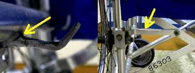

かならずお読みください→
車いすのここがこわれる
古い車いすを扱っていると，いろいろなこわれ方をした車いすを見ました．
初めの頃は，目のつけどころが分かりませんでしたので，どれも完全にこわれるまで気がつきませんでした．しかし，病院のように，複数の同じ機種を，同じような使い方をしてきた場合には，こわれやすい箇所がだんだんと分かってきました．
その結果，小さな破損を発見し，大きくなる前に対策できるようになりました．
言うなる「早期発見，早期修理」でしょうか．
これにより，道具としての車いすを，より長く使い続けることが出来ます．また車いすの破損や故障が原因となる事故も未然に防ぐことが出来ます．もちろん，新しい車いすに買い換えることも大切です．しかし，可能な限り廃棄物を出さない努力も今後さらに重視されていくことでしょう．
－－－－＋－
消耗品の部
肘掛け
車いすの部品の中で一番消耗が激しいものが，肘掛けです．まず汚れます．次に破れます．汚れの一番は，手垢と，食べこぼしです．素材にもよりますが，約３年で角の部分が破れて来ます．シート
特に座席部分の前，中央（またの部分）が汚れます．食べこぼし，尿，便等です．ビニル系素材の場合，座席前端部中央から亀裂が入りやすいです．背のシートは比較的こわれにくいです．ただ，背面のポケットにゴミがたまったり，汚れたりします．取り付けネジもゆるみやすいです．増締めの際には，トルクの管理が必要です．通常のドライバでは，メネジを壊すことがあります．ブレーキ
ブレーキは安全に関係する重要な部品です．しかし消耗品だと考えるべきです．
ブレーキには何種類かありますが，いずれもリンクの軸部分（右写真黄色矢印など）の摩耗に注意が必要です．摩耗が大きくなるとリンクの形状が変化し（右写真，本来なら中央の軸は白丸の位置にありリンクの形状は点線の四角形であるが，摩耗により三角形になっている点に注意），その結果として，ブレーキを保持する力が弱くなります．レバーに少しさわっただけでブレーキが外れるようになります．トグルブレーキの該当する部分を分解した例（推定６年間使用）を写真で示します．軸穴も軸もかなり摩耗していることが分かります．
ついで，レバーの動き範囲を規制するストッパーもこわれやすい部分です．これはレバーに大きな力がかかったためと思われます．最近のブレーキ部品はかなり対策されていますが，注意が必要です．
定期的に潤滑油を加えることで，写真のような摩耗の対策をします．メーカ出荷状態では注油されていない場合もあります．タイヤ チューブ
消耗品です．しかし，寿命は使用状況で大きく変わりますので一概に言えません．溝が残っていても，ゴム素材の劣化が進むと交換するべきです．交換は，左右ともタイヤとチューブを同時に行います．
タイヤといえば，パンクが思い浮かびます．しかし当院の場合，純粋なパンクは大変にまれです．空気漏れのおおくは，バルブゴム（ムシゴムとも呼ばれています）の不具合です．前輪
古いタイプでは，旋回軸のベアリング関係のトラブルや車輪ゴムの劣化などたくさん見られましたが，最近はずいぶん改善されています．しかし，旋回軸をフレームの丸パイプに差し，締め付けネジでゴムブッシュを膨張させて固定するカスク型キャスタは，基本的にネジのゆるみにより脱落することがあります．
車輪自体も消耗品と考えるべきです．耐久部品の部
リム，ハブ，スポーク，車軸
基本的に自転車部品を流用しているため，品質は良く，耐久性も問題ありません．滅多なことではこわれません．ただし車軸は別です．９０年代以降，海外製部品を使った車いすでは，車軸の品質が異常に低いものがあります．曲がり変形．切削加工不良．メッキ不良など見られます．またこれらは，部品だけでなく組み立ての品質が低い場合もあります．注意が必要です．フレーム
基本的に交換が出来ない部品です．
アルミフレームでは，クロスバージョイント部分の異常摩耗とサイドフレームについているＬ字型シートフレーム受け（写真左）がこわれやすい部分です．肘掛けが外れるタイプでは，背フレームの接合部分がこわれやすいです．またクロスステー（写真右）やステップポストも変形しやすいです．最近の車いすではこれらの部分の改善が進んでいますが，やはりこわれるとしたら，この部分からだと思います．アルミフレームの特徴は，摩耗や変形が現れやすいことです．鉄フレームでは，一般にアルミフレームよりこわれにくいですが，こわれない訳ではありません．２０年近く使っていると，ローつけ部分の周囲を丸ごと引きちぎるような破損例（左写真．前クロスバー，ベースパイプとのローつけ部分が破断．車いす下から撮影）がありました．こわれた部分を観察すると，腐食（さび）とひびと繰り返し荷重が加わることで，徐々に破損が進行していったと考えられます．
同じ年代，機種の車いすで観察すると，同様の位置でひびが見つかりました．（下写真，右の写真のひびは長さが３ｍｍ程度．その気になってみないと見つからない）
当院では，この写真のように，前クロスバーが平板材の機種でしかこの種の破損は見つかっていません．丸パイプ材を使えば，接合面が大きくとれるので，この点で有利とは思われますが，急所であることには変わりありません．クロスバー接合部も急所のようです．下の写真は，軸部分での破断例です．
鉄フレームでは，腐食する特徴から，劣化が見えない部分で徐々に進み，それがひびという見える形で現れ，すすみ，破断に至ります．車いすで言うと，加工の際に加熱している部分（＝ローつけ部分の周囲）が目の付け所と言えます．
－－－－－－－－
まとめ
車いすに限らず，痛みが小さいうちに手当てすれば，軽く，安くすみます．誰が見ても，こりゃいかん
となると，高くつきます．
ここで紹介した車いすの故障例が，皆さんのお役に立てば幸いです．
前 次
はじめに
臨床リハ工学サービス科にもどる